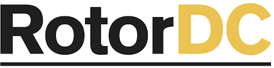
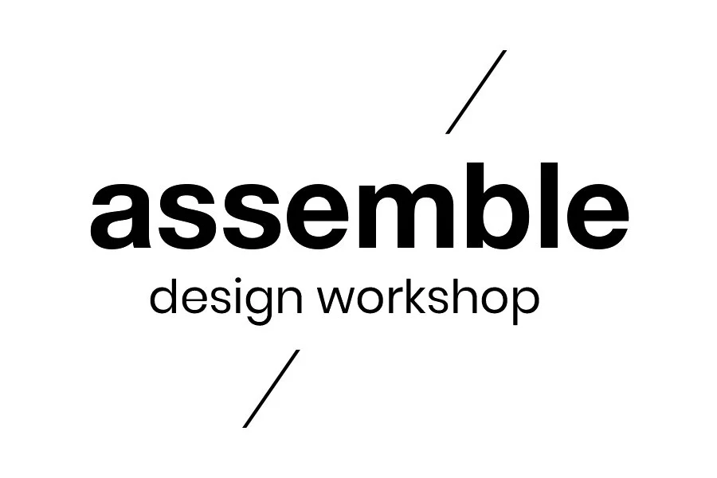
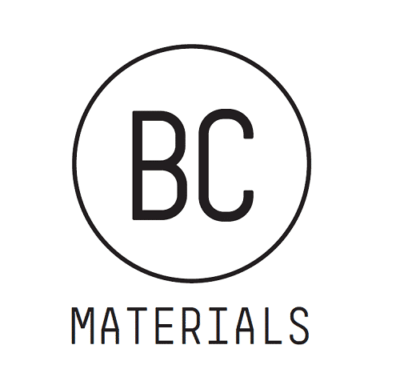
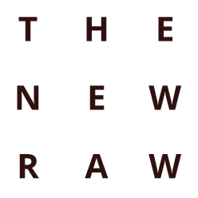
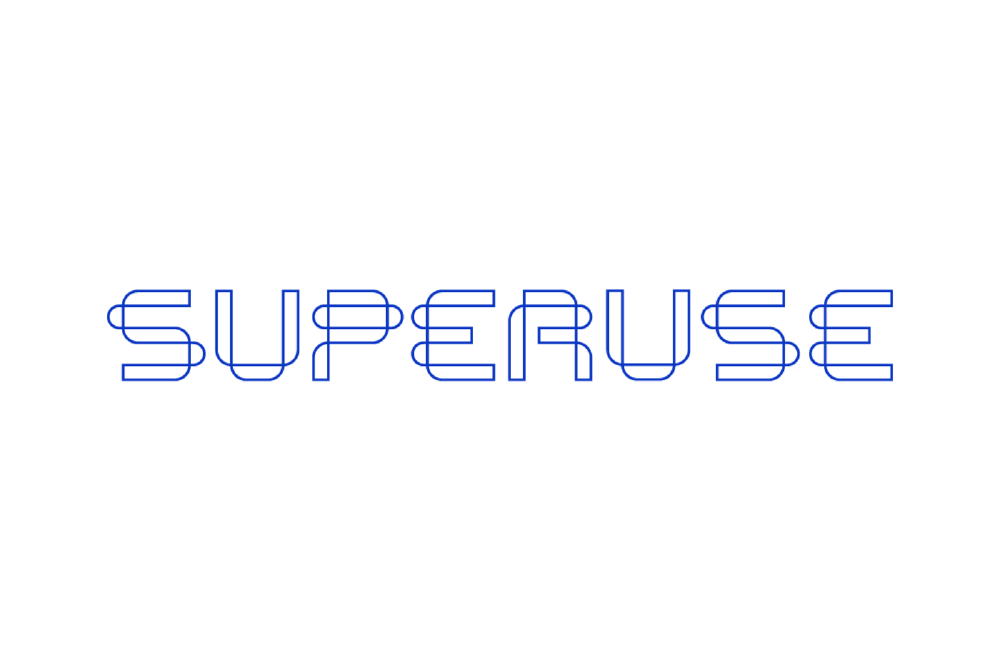
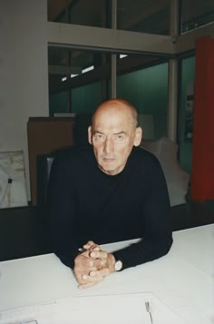
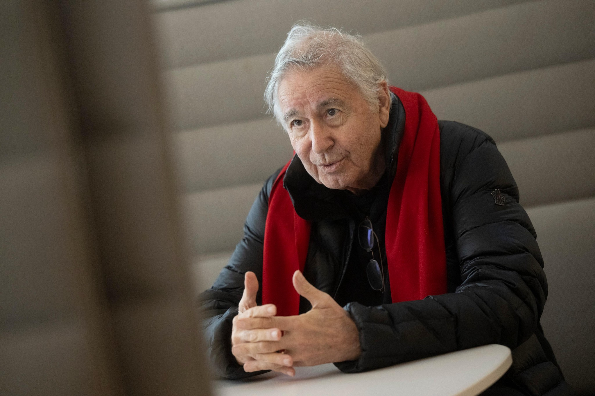
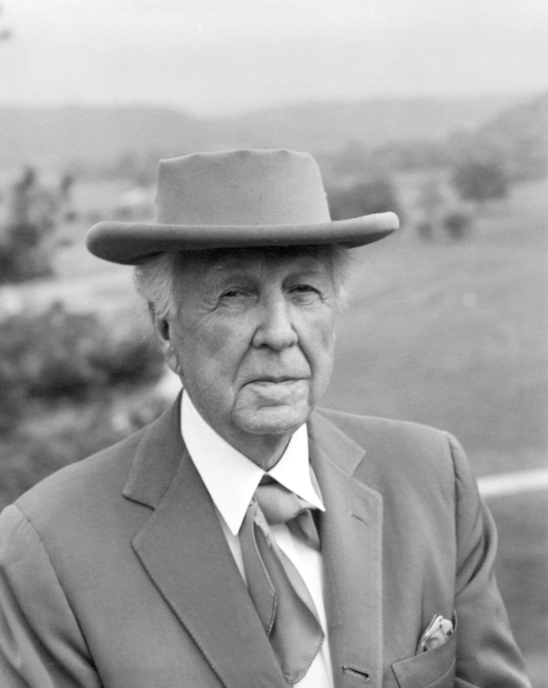
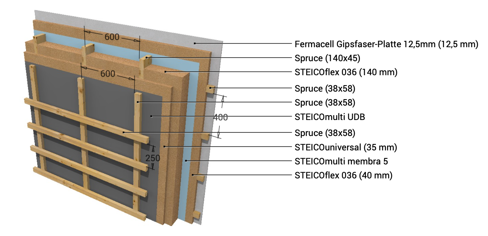
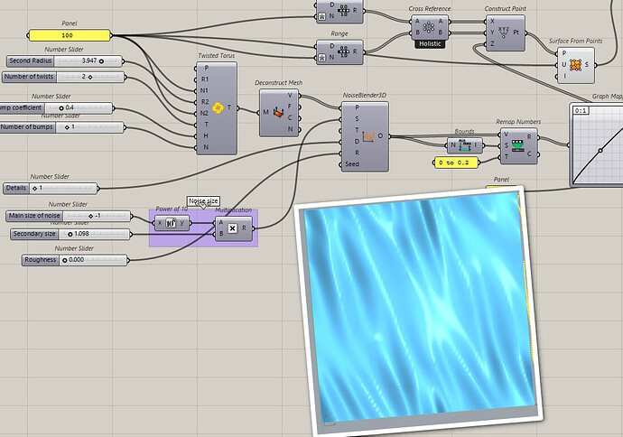

Elevating reclaimed materials through design excellence and creative partnerships.
Our model goes beyond recycling. By collaborating with leading architects and designers, we transform reclaimed materials into desirable, high-value architectural products. Design is not an afterthought—it is the driver of value creation.






Exploring modular systems through salvaged building components and circular material flows.

Parametric systems developed using robotic fabrication and recycled plastic waste streams.

Architecture driven by material reuse networks, transforming waste into high-value spatial systems.
Each collaboration results in a curated collection of architectural elements—panels, furniture, and systems—crafted from reclaimed materials. These collections redefine waste as a premium design resource.

Reclaimed Masonry
Modular wall assemblies and facade systems developed from salvaged brick and mortar units.

Recycled Aggregate
Parametric panels and surface systems cast using crushed concrete and recycled aggregates.
Collaborate
Join a network of studios exploring new material futures.
Join Network